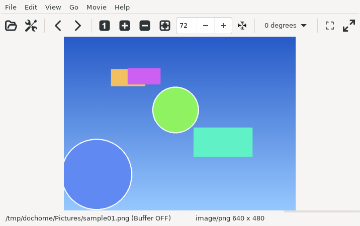
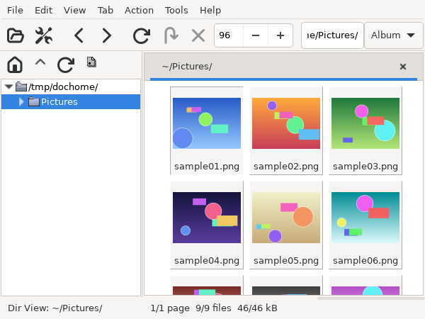

Typing a command like the following lets you view image files.
$ gimv [image files...]

Image Window (default settings)
Also, if you specify a directory name with the "-d" option as follows, all image files in the directory are opened as thumbnails in the thumbnail window.
$ gimv -d [directory]

Thumbnail Window (default settings)
If you specify image file names and directory names mixed together as follows, image files are opened in the image window and directories in the thumbnail window.
$ gimv -d hoge01.jpg ~/ ~/images images/hoge02.jpg\ /usr/share/pixmaps/ hogehoge.png ......
With the "-t" option, everything can be opened in the thumbnail window.
The other command line options are as follows.
$ gimv -h Copyright (C) 2001 Takuro Ashie Usage: gimv [OPTION...] [Image Files...] -d, --directory Scan a directory at startup -R, --recursive Scan directories recursively (use with "-d") -D, --scan-dot Read dotfiles when scanning directories (use with "-d") -e, --ignore-ext Ignore file name extension -s, --scale=SCALE Image scale in the image window [%] -b, --buffer=ON/OFF Keep the original image in memory -M, --menubar Show the menubar in the image window -T, --toolbar Show the toolbar in the image window -I, --imagewin Open an empty image window at startup -w, --thumbwin Open the thumbnail window at startup -i, --imageview Open all images in the image window -t, --thumbview Open all images in the thumbnail window -S, --slideshow Open the image files in a slideshow -W, --wait=TIME Slideshow interval (use with "-S") [sec] -v, --version Print version information -h, --help Show this message
To open a directory from the GUI, double-click it in the directory view, or type its path in the directory entry of the thumbnail window toolbar and press Enter (a new tab is opened only if the directory has images). You can also select directories in the file open dialog and press "Thumbnails of the selected files".